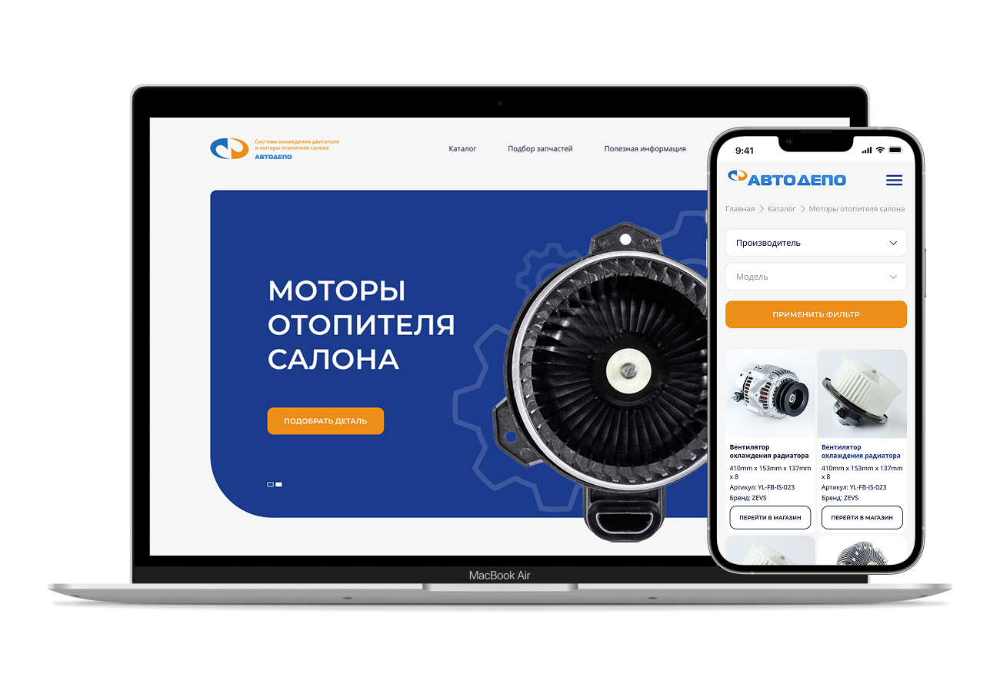
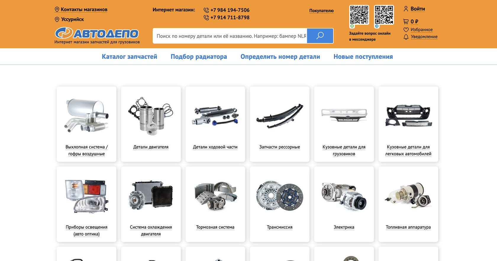
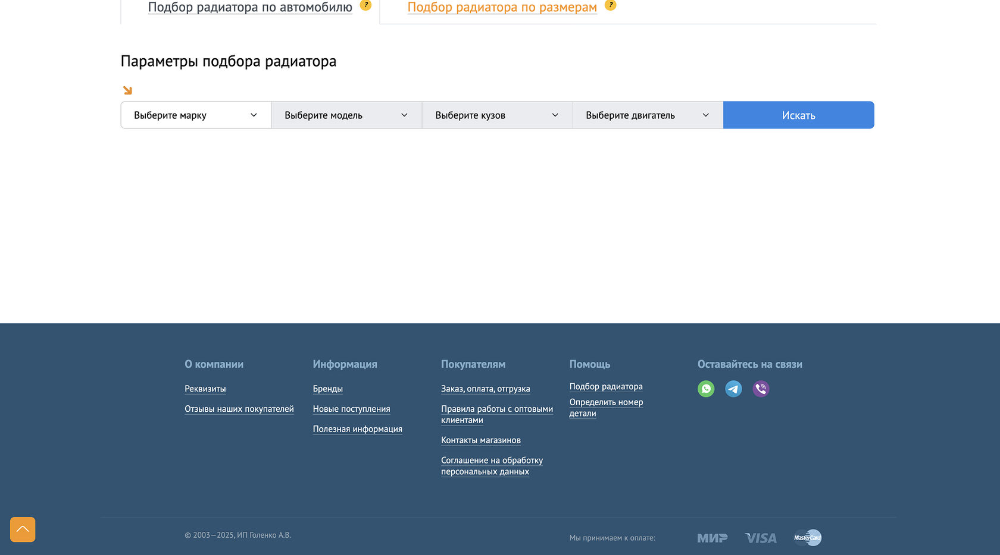
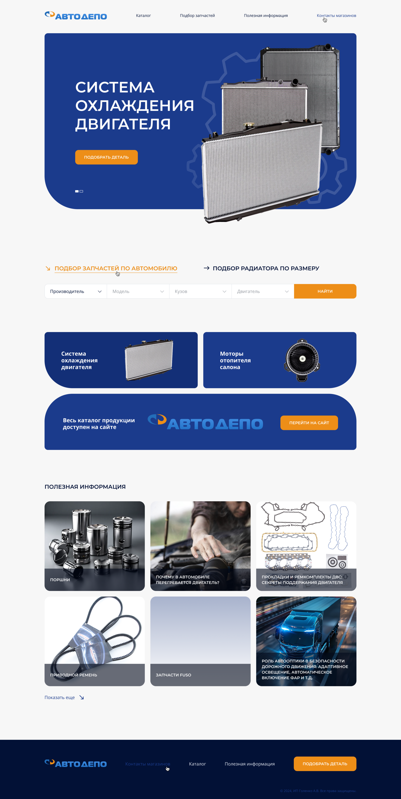
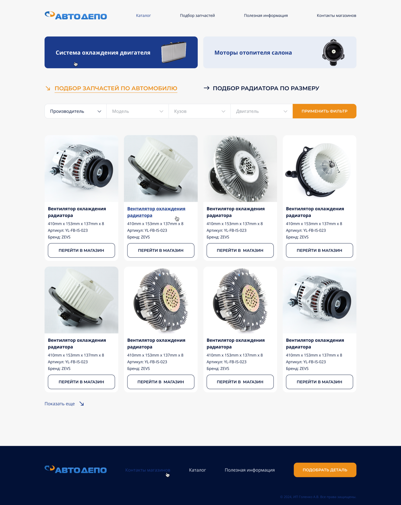
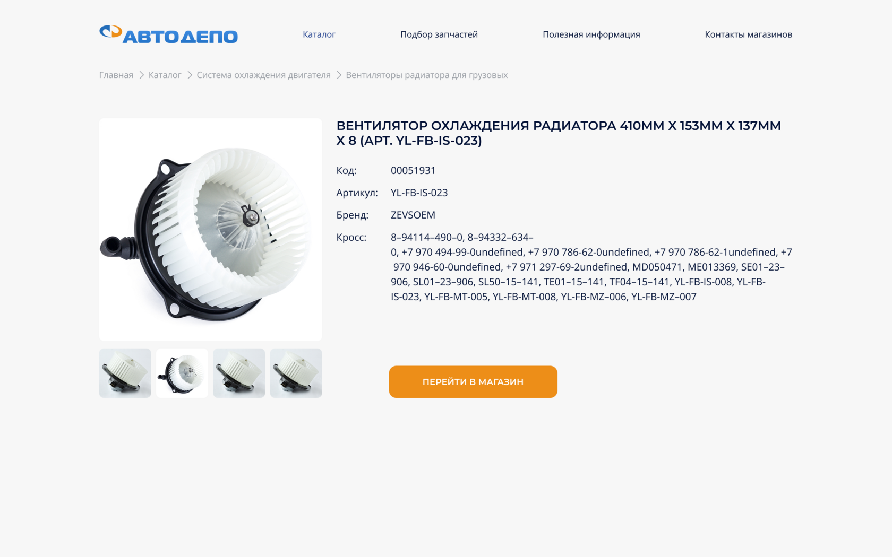
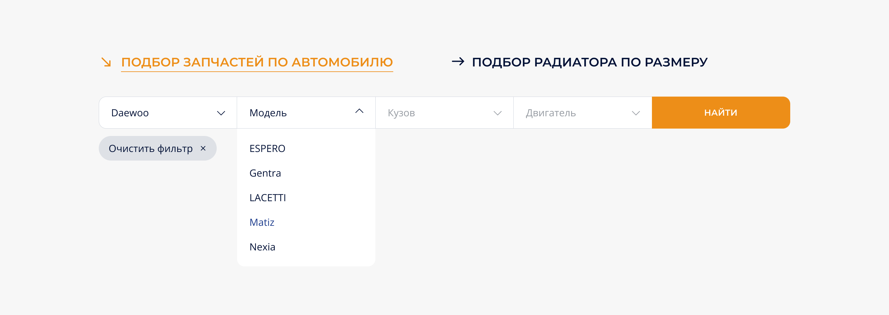
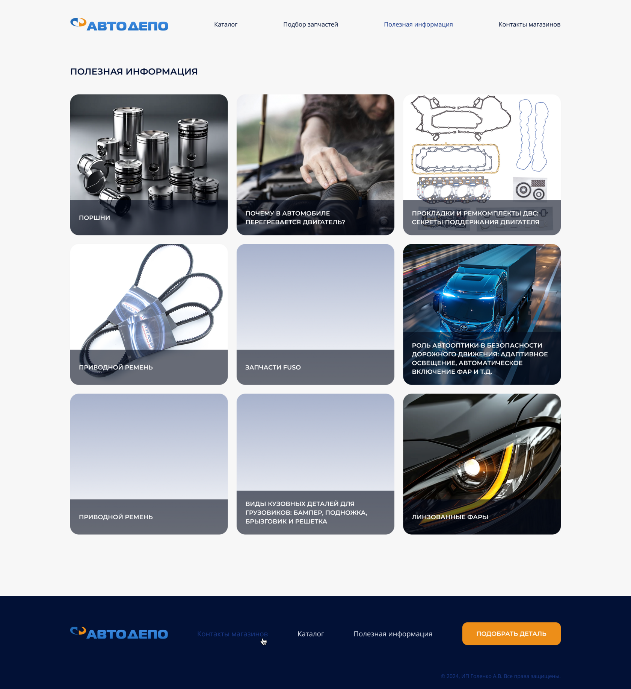

Сайт для магазина автозапчастей Автодепо
autodeporadiators.ruАвтодепо — крупный магазин по продаже автозапчастей в Приморском крае

Задача
Сделать для компании дополнительный сайт по продаже моторов отопителя салона и систем охлаждения двигателей для привлечения клиентов
Изучение основного сайта компании
Необходимо было создать дополнительный сайт, похожий на основной, но в более современном дизайне, так как текущий визуально устарел. При этом нужно было сохранить цветовую гамму оригинального сайта, чтобы сохранить узнаваемость.


Как UX/UI дизайнер
В рамках проекта я прорабатывала:
- структуру каталога и фильтрацию товаров
- сценарии подбора (в том числе сложный подбор по параметрам)
- карточки товаров и список
- пользовательский путь от поиска до перехода к покупке
Особое внимание уделяла работе с перегруженными данными и упрощению выбора для пользователя.
Итоговый дизайн
В результате проделанной работы был разработан современный адаптивный макет веб-страницы, ориентированный на удобство пользователей и соответствие актуальным трендам веб-дизайна.





Результаты
Проект успешно запущен и приносит новые заказы. Удалось достичь главной цели — привлечение новых клиентов.